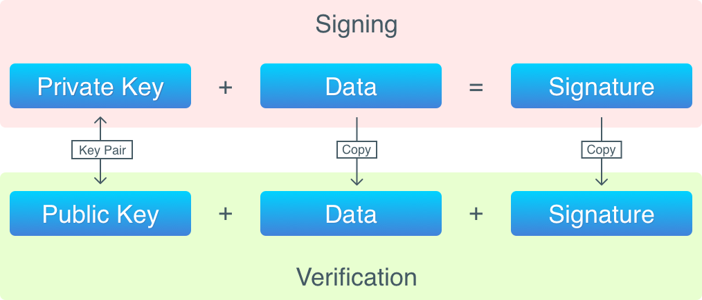

[Go로 구현하는 블록체인] Part 5: 주소
Jun 6, 2018 00:00 · 6986 words · 14 minute read
Building Blockchain in Go 시리즈를 번역한 글입니다.
서론
이전 파트에서는 트랜잭션을 구현했었다. 또한 비트코인에는 사용자 계정이 없고 개인 정보 (이름, 여권 번호 및 SSN등)는 필요하지 않으며 어디에도 저장되지 않는다는 트랜잭션의 비개인적인 본질적인 특성에 대해서도 알아보았다. 하지만 트랜잭션 출력의 소유자를 식별하기 위한 무언가가 필요하긴하다 (이 출력들은 코인의 소유자가 잠궜기 때문에). 그리고 이게 비트코인 주소가 필요한 이유이다. 지금까지 우리는 임의의 사용자 정의 문자열을 주소로 사용해왔으며 비트코인에서 구현된 실제 주소를 구현할 때가 왔다.
이 파트에서는 중요한 코드 변경사항을 소개하기 때문에 모든 코드를 설명하는건 의미가 없다. 모든 변경사항은 여기를 참조하라.
비트코인 주소
다음은 비트코인 주소의 예이다: 1A1zP1eP5QGefi2DMPTfTL5SLmv7DivfNa. 이는 사토시 나카모토의 것으로 알려진 최초의 비트코인 주소이다. 비트코인 주소는 모두 공개되어있다. 다른 사람에게 코인을 전송하기 위해선 받는 사람의 주소를 알아야한다. 그러나 주소는 고유한 값임에도 불구하고 여러분을 “지갑”의 소유자로 식별하는건 아니다. 사실 이 주소는 사람이 읽기 쉬운 형태의 공개키 표현이다. 비트코인에서 식별자는 여러분의 컴퓨터에 저장된 개인키와 공개키의 쌍 (혹은 쌍들)이다. 비트코인은 암호화 알고리즘을 조합하여 이러한 키들을 생성하는데 전세계의 그 어느 누구도 키에 물리적으로 접근해서 탈취하지 않는 이상 여러분의 코인에 접근할 수 없음을 보장한다. 그럼 이제 어떤 알고리즘들이 사용되는지 살펴보자.
공개키 암호
공개키 암호화 알고리즘에서는 공개키와 개인키의 쌍을 사용한다. 공개키는 민감하지 않으며 누구에게나 공개될 수 있다. 반대로 개인키는 소유자의 식별자로 사용되므로 소유자 이외에는 아무도 접근하면 안되기 때문에 공개되어서는 안된다. 여러분이 바로 개인키이다.
본질적으로 비트코인 지갑은 이 키들의 쌍일뿐이다. 지갑 애플리케이션을 설치하거나 비트코인 클라이언트를 사용해 새로운 주소를 생성하면 키 쌍이 생성된다. 비트코인에선 개인키를 제어하는 사람이 이 키로 전송되는 모든 코인을 제어한다.
개인키와 공개키는 임의의 바이트 시퀀스이기 때문에 화면에 출력할 수 없으며 사람이 읽을 수도 없다. 이게 비트코인이 공개키를 사람이 읽을 수 있는 문자열로 변환하는 알고리즘을 사용하는 이유이다.
비트코인 지갑 애플리케이션을 사용해 본 적이 있다면 기억하기 쉬운 문구가 생성되었을 가능성이 높다. 이 문구는 개인키 대신 사용되며 키를 생성하는데 사용할 수 있다. 이 메커니즘은 BIP-039에 구현되어있다.
우리는 이제 비트코인에서 사용자를 어떻게 식별하는지 알게되었다. 그러나 비트코인은 트랜잭션 출력 및 코인에 대한 소유권을 어떻게 확인할까?
디지털 서명
수학과 암호학에는 디지털 서명이라는 개념이 있는데 이 알고리즘은 다음을 보장한다.
- 송신자로부터 수신자에게 데이터가 전송되는 동안에는 데이터가 변경되지 않는다.
- 데이터는 특정 송신자에 의해 생성된다.
- 송신자는 데이터 전송을 거부할 수 없다.
데이터에 서명 알고리즘을 적용하면 (즉, 데이터 서명) 서명이 얻어지며, 이는 나중에 검증될 수 있다. 디지털 서명에서는 개인키를 사용하며 검증시에는 공개키가 필요하다.
데이터 서명을 위해서는 다음의 것들이 필요하다.
- 서명할 데이터
- 개인키
서명 작업은 트랜잭션 입력에 저장될 서명을 생성한다. 서명 검증을 위해선 다음의 것들이 필요하다.
- 서명된 데이터
- 서명
- 공개키
간단히 말하면 검증 과정은 다음과 같다: 이 데이터에서 얻은 서명이 공개키 생성에 사용된 개인키로 서명되었는지를 확인한다.
디지털 서명은 암호화가 아니기 때문에 서명에서 데이터를 재구성할 수 없다. 이는 해싱 알고리즘에 데이터를 넣어 데이터의 고유한 표현을 얻어내는 해싱과 유사하다. 서명과 해시의 차이점은 키 쌍으로 이는 서명 검증을 가능하게 만든다. 그러나 키 쌍은 데이터 암호화에도 사용될 수 있는데 개인키는 암호화, 공개키는 복호화에 사용된다. 하지만 비트코인은 암호화 알고리즘을 사용하지 않는다.
비트코인에서 모든 트랜잭션 입력은 트랜잭션을 생성한 사람에 의해 서명된다. 비트코인의 모든 트랜잭션은 블록에 추가되기 전에 반드시 검증되어야한다. 검증이란 다음을 의미한다.
- 입력이 이전 트랜잭션의 출력을 사용할 권한을 가지고 있는지 확인
- 트랜잭션 서명이 올바른지 확인
데이터 서명과 서명 검증을 도식으로 나타내면 다음과 같다.

이제 트랜잭션의 전체 생명주기를 살펴보자.
- 초기에는 코인베이스 트랜잭션을 가진 제네시스 블록이 있다. 코인베이스 트랜잭션에는 입력이 없기 때문에 서명이 필요하지않다. 코인베이스 트랜잭션의 출력은 해싱된 공개키가 포함되어있다. (RIPEMD16(SHA256(PubKey) 알고리즘이 사용됨)
- 누군가 코인을 전송하면 트랜잭션이 생성된다. 트랜잭션의 입력은 이전 트랜잭션의 출력을 참조한다. 모든 입력은 해싱되지 않은 공개키와 전체 트랜잭션의 서명을 저장한다.
- 트랜잭션을 받는 비트코인 네트워크상의 다른 노드들이 이를 검증한다. 이 노드들은 다른 것들 외에도 입력의 공개키 해시가 참조된 출력의 해시와 같은지 (송신자가 본인 소유의 코인을 사용했는지를 보장)와 서명이 올바른지 (트랜잭션이 코인의 실소유자에 의해 생성되었는지를 보장)를 확인한다.
- 채굴 노드가 새로운 블록을 채굴할 준비가 되면, 이 노드는 트랜잭션을 블록에 넣은 뒤 채굴을 시작한다.
- 블록이 채굴되면 네트워크상의 모든 노드는 블록이 채굴되었다는 메시지를 받으며 블록체인에 블록을 추가한다.
- 블록이 블록체인에 추가되면 트랜잭션이 완료되고 출력은 새로운 트랜잭션에서 참조될 수 있다.
타원 곡선 암호
위에서 설명한 것처럼 공개키와 개인키는 임의의 바이트 시퀀스이다. 개인키는 코인의 소유자를 식별하기 위해 사용되기 때문에 랜덤 알고리즘은 완전히 랜덤한 바이트를 생성할 수 있어야한다. 다른 사람이 소유하고 있는 개인키를 생성함으로써 충돌이 발생해선 안된다.
비트코인은 타원 곡선을 사용해 개인키를 생성한다. 타원 곡선은 복잡한 수학적 개념으로 여기서는 자세히 다루진 않는다. (궁금하다면 타원 곡선 소개글을 참고하라) 우리가 알아야 할 것은 이 곡선을 사용하면 아주 크고 랜덤한 숫자를 생성할 수 있다는 것이다. 비트코인에서 사용되는 곡선은 0부터 2^(2^56) (이는 10^77에 근사하는 값이며 우주에는 10^78개에서 10^82개 사이의 원자가 존재한다) 사이의 숫자를 무작위로 선택할 수 있다. 이렇게 높은 상한을 사용하면 동일한 개인키를 두 번 생성하기는 거의 불가능하다.
또한, 비트코인은 ECDSA (Elliptic Curve Digital Signature Algorithm, 타원 곡선 디지털 서명 알고리즘) 알고리즘을 사용해 트랜잭션에 서명을 한다. 우리도 이 알고리즘을 사용할 것이다.
Base58
이제 다시 위에서 언급했던 비트코인 주소로 돌아가자: 1A1zP1eP5QGefi2DMPTfTL5SLmv7DivfNa. 우리는 이제 이 값이 사람이 읽을 수 있는 형태의 공개키임을 알고있다. 이를 디코딩해 나온 공개키를 16진법의 바이트 시퀀스로 나타내면 다음과 같다.
0062E907B15CBF27D5425399EBF6F0FB50EBB88F18C29B7D93
비트코인은 공개키를 사람이 읽을 수 있는 형태로 변환하기 위해 Base58 알고리즘을 사용한다. 이 알고리즘은 잘 알려진 Base64 알고리즘과 아주 유사하지만 문자 유사성을 활용한 공격을 피하기 위해 알파벳에서 일부 문자를 제거한 버전을 사용한다. 그래서 Base58에는 유사한 문자들인 0 (제로), O (대문자 o), I (대문자 i), l (소문자 L)가 없다. 그리고 + 및 / 문자 또한 없다.
공개키로부터 주소를 얻는 과정을 도식화하면 다음과 같다.

즉, 좀 전에 언급한 디코딩된 공개키는 다음과 같이 세 부분으로 구성되어있다.
Version Public key hash Checksum
00 62E907B15CBF27D5425399EBF6F0FB50EBB88F18 C29B7D93
해싱 함수는 단방향이기 때문에 해시로부터 공개키를 추출하는건 불가능하다. 그러나 해시 함수에 키를 넣어 해시를 만든 뒤 두 해시를 비교함으로써 해시에 공개키가 사용되었는지를 확인할 수 있다.
이론은 다 살펴보았으니 이제 코드를 작성할 시간이다. 코드를 작성하다보면 개념들을 좀 더 이해하기 쉬울 것이다.
주소 구현
Wallet 구조체부터 작성해보자.
type Wallet struct {
PrivateKey scdsa.PrivateKey
PublicKey []byte
}
type Wallets struct {
Wallets map[string]*Wallet
}
func NewWallet() *Wallet {
private, public = newKeyPair()
wallet := Wallet{private, public}
return &wallet
}
func newKeyPair() (ecdsa.PrivateKey, []byte) {
curve := elliptic.P256()
private, err := ecdsa.GenerateKey(curve, rand.Reader)
pubKey := append(private.PublicKey.X.Bytes(), private.PublicKey.Y.Bytes()...)
return *private, pubKey
}
지갑은 단순히 키의 쌍이다. 지갑들을 하나의 파일로 저장하고 불러올 수 있도록 Wallets 타입을 만든다. Wallet의 생성자에서 새로운 키 쌍이 생성된다. newKeyPair 함수는 직관적인데 ECDSA는 타원 곡선 기반이기 때문에 타원 곡선이 하나 필요하다. 다음으로, 곡선을 이용해 개인키가 생성되고 개인키로부터 공개키가 생성된다. 여기서 주목해야할 것은 타원 곡선 기반 알고리즘에서 공개키들은 곡선 위의 점들이라는 것이다. 따라서 공개키는 X, Y 좌표의 조합이다. 비트코인에서 이 좌표들은 하나로 연결되어 공개키를 형성한다.
이제 주소를 생성해보자.
func (w Wallet) GetAddress() []byte {
pubKeyHash := HashPubKey(w.PublicKey)
versionedPayload := append([]byte{version}, pubKeyHash...)
checksum := checksum(versionedPayload)
fullPayload := append(versionedPayload, checksum...)
address := Base58Encode(fullPayload)
return address
}
func HashPubKey(pubKey []byte) []byte {
publicSHA256 := sha256.Sum256(pubKey)
RIPEMD160Hasher := ripemd160.New()
_, err := RIPEMD160Hasher.Write(publicSHA256[:])
publicRIPEMD160 := RIPEMD160Hasher.Sum(nil)
return publicRIPEMD160
}
func checksum(payload []byte) []byte {
firstSHA := sha256.Sum256(payload)
secondSHA := sha256.Sum256(firstSHA[:])
return secondSHA[:addressChecksumLen]
}
공개키는 다음 단계들을 통해 Base58 주소로 변환된다.
- 공개키를 RIPEMD(SHA256(PubKey)) 해싱 알고리즘으로 두 번 해싱한다.
- 해시 접두에 주소 생성 알고리즘의 버전을 추가한다.
- 위 단계에서 나온 해시를 SHA256(SHA256(payload))로 해싱하여 체크섬을 계산한다.
- 체크섬을 version + PubKeyHash 조합의 접미에 추가한다.
- version + PubKeyHash + checksum 조합을 Base58로 해싱한다.
이 결과로 여러분은 실제 비트코인 주소를 얻을 수 있으며 blockchain.info에서 잔고도 확인할 수 있다. 하지만 필자는 여러분이 새 주소를 생성하고 잔고를 몇번이고 확인해봐도 잔고가 항상 0임을 확신할 수 있다. 이게 바로 적절한 공개키 암호화 알고리즘의 선택이 중요한 이유이다. 개인키를 임의의 수라고 생각하면 동일한 숫자를 생성할 확률은 가능한한 낮아야하며 이상적으로는 절대 발생해서는 안된다.
또한 주소를 얻기 위해 비트코인 노드에 연결할 필요는 없다는 점에 유의하라. 주소 생성 알고리즘은 많은 프로그래밍 언어와 라이브러리에 구현되어있는 공개된 알고리즘들을 조합하여 사용하고있다.
이제 트랜잭션이 주소를 사용할 수 있도록 입력과 출력을 수정해야한다.
type TXIntput struct {
Txid []byte
Vout int
Signature []byte
PubKey []byte
}
func (in *TXInput) UsesKey(pubKeyHash []byte) bool {
lockingHash := HashPubKey(in.PubKey)
return bytes.Compare(lockingHash, pubKeyHash) == 0
}
type TXOutput struct {
Value int
PubKeyHash []byte
}
func (out *TXOutput) Lock(address []byte) {
pubKeyHash := Base58Decode(address)
pubKeyHash := pubKeyHash(1 : len(pubKeyHash)-4)
out.PubKeyHash = pubKeyHash
}
func (out *TXOutput) IsLockedWithKey(pubKeyHash []byte) bool {
return bytes.Compare(out.PubKeyHash, pubKeyHash) == 0
}
스크립팅 언어를 구현하지는 않으므로 더 이상 ScriptPubKey와 ScriptSig 필드는 사용하지 않을 것이다. 대신 ScriptSig는 Signature와 PubKey 필드로 분할되고 ScriptPubKey는 PubKeyHash로 바뀐다. 우리는 비트코인과 동일한 출력 잠금/해제 및 입력 서명 로직을 구현할 것이다. 다만 우리는 메서드를 사용할 것이다.
UsesKey 메서드는 입력이 출력을 해제할 수 있는 특정한 키를 사용하고 있는지 검사한다. 입력은 해싱되지 않은 공개키를 저장하고 있는데 메서드는 해싱된 값을 받고 있음을 보라. IsLockedWithKey는 제공된 공개키 해시가 출력을 잠그는데 사용되었는지를 검사한다. 이는 UsesKey와는 대조적이며 이 두 함수 모두 FindUnspentTransaction에서 트랜잭션간의 연결을 구성하는데 사용된다.
Lock은 출력을 잠그기만 한다. 코인을 다른 사람에게 전송할 때 우리는 주소밖에 모르기 때문에 함수는 인자로 주소만 받는다. 주소가 디코딩되고 공개키 해시가 추출되면 PubKeyHash 필드에 저장된다.
잘 동작하는지 확인해보자.
$ blockchain_go createwallet
Your new address: 13Uu7B1vDP4ViXqHFsWtbraM3EfQ3UkWXt
$ blockchain_go createwallet
Your new address: 15pUhCbtrGh3JUx5iHnXjfpyHyTgawvG5h
$ blockchain_go createwallet
Your new address: 1Lhqun1E9zZZhodiTqxfPQBcwr1CVDV2sy
$ blockchain_go createblockchain -address 13Uu7B1vDP4ViXqHFsWtbraM3EfQ3UkWXt
0000005420fbfdafa00c093f56e033903ba43599fa7cd9df40458e373eee724d
Done!
$ blockchain_go getbalance -address 13Uu7B1vDP4ViXqHFsWtbraM3EfQ3UkWXt
Balance of '13Uu7B1vDP4ViXqHFsWtbraM3EfQ3UkWXt': 10
$ blockchain_go send -from 15pUhCbtrGh3JUx5iHnXjfpyHyTgawvG5h -to 13Uu7B1vDP4ViXqHFsWtbraM3EfQ3UkWXt -amount 5
2017/09/12 13:08:56 ERROR: Not enough funds
$ blockchain_go send -from 13Uu7B1vDP4ViXqHFsWtbraM3EfQ3UkWXt -to 15pUhCbtrGh3JUx5iHnXjfpyHyTgawvG5h -amount 6
00000019afa909094193f64ca06e9039849709f5948fbac56cae7b1b8f0ff162
Success!
$ blockchain_go getbalance -address 13Uu7B1vDP4ViXqHFsWtbraM3EfQ3UkWXt
Balance of '13Uu7B1vDP4ViXqHFsWtbraM3EfQ3UkWXt': 4
$ blockchain_go getbalance -address 15pUhCbtrGh3JUx5iHnXjfpyHyTgawvG5h
Balance of '15pUhCbtrGh3JUx5iHnXjfpyHyTgawvG5h': 6
$ blockchain_go getbalance -address 1Lhqun1E9zZZhodiTqxfPQBcwr1CVDV2sy
Balance of '1Lhqun1E9zZZhodiTqxfPQBcwr1CVDV2sy': 0
잘 동작한다! 이제 트랜잭션 서명을 구현해보자.
서명 구현
트랜잭션은 반드시 서명되어야하는데 이는 비트코인에서 특정인이 다른 사람의 코인을 소비할 수 없도록 보장하는 유일한 방법이기 때문이다. 서명이 유효하지 않으면 트랜잭션 또한 유효하지 않다고 판단되므로 따라서 블록체인에 추가될 수 없다.
우리는 하나를 제외하고 트랜잭션 서명을 구현하는데 필요한 것들을 모두 갖췄다. 그 하나는 바로 서명을 위한 데이터이다. 트랜잭션에서 실제로 서명되는건 무엇일까? 혹은 트랜잭션 전체가 서명되는것인가? 서명할 데이터를 선택하는건 아주 중요한 문제이다. 서명해야할 데이터에는 고유한 방식으로 데이터를 식별하는 정보가 포함되어야한다. 예를 들어, 단순히 출력값을 서명하는건 의미가 없는데 이 서명에는 전송 및 수신자에 대한 정보가 없기 때문이다.
트랜잭션이 이전 출력의 잠금을 해제하고 값을 재분배하고 새로운 출력을 잠궈야함을 고려한다면 다음의 데이터들이 서명되어야한다.
- 잠금 해제된 출력에 저장된 공개키 해시. 이는 트랜잭션의 “전송자”를 식별한다.
- 새롭게 잠긴 출력에 저장된 공개키 해시. 이는 트랜잭션의 “수신자”를 식별한다.
- 새로운 출력의 값
비트코인에서 잠금/해제 로직은 스크립트 형태로 저장되며 이는 각각 입력과 출력의 ScriptSig와 ScriptPubKey 필드에 저장된다. 비트코인은 여러가지 유형의 스크립트를 허용하기 때문에 ScriptPubKey 전체를 서명한다.
보시다시피 입력에 저장된 공개키는 서명할 필요가 없다. 이 때문에 비트코인에서 서명되는건 트랜잭션이 아니라 참조하고있는 출력들의 ScriptPubKey를 저장하고 있는 입력의 데이터가 포함된 잘려진 (Trimmed) 복사본이다.
잘려진 트랜잭션 복사본을 얻는 자세한 과정은 여기를 참조하라. 오래된 문서이지만 더 신뢰할 수 있는 정보원을 찾을 수 없었다.
{kind=link}
복잡해보이니 코드를 한 번 작성해보자. Sign 메서드부터 구현해보겠다.
func (tx *Transaction) Sign(privKey ecdsa.PrivateKey, prevTXs map[string]Transaction) {
if tx.IsCoinbase() {
return
}
txCopy := tx.TrimmedCopy()
for inID, vin := range txCopy.Vin {
prevTx := prevTxs[hex.EncodeToString(vin.Txid)]
txCopy.Vin[inID].Signature = nil
txCopy.Vin[inID].PubKey = prevTx.Vout[vin.Vout].PubKeyHash
txCopy.ID = txCopy.Hash()
txCopy.Vin[inID].PubKey = nil
r, s, err := ecdsa.Sign(rand.Reader, &privKey, txCopy.ID)
signature := append(r.Bytes(), s.Bytes()...)
tx.Vin[inID].Signature = signature
}
}
이 메서드는 개인키와 이전 트랜잭션들의 집합을 인자로 받는다. 이전에도 언급했듯이 트랜잭션을 서명하기 위해선 트랜잭션 입력이 참조하고 있는 이전 출력의 값들이 필요하기 때문에 이 출력들을 가지고 있는 트랜잭션 집합이 필요하다.
한 줄씩 살펴보자.
if tx.IsCoinbase() {
return
}
코인베이스 트랜잭션에는 실제 입력값이 없기 때문에 서명하지 않는다.
txCopy := tx.TrimmedCopy()
전체 트랜잭션이 아닌 잘려진 복사본이 서명된다.
func (tx *Transaction) TrimmedCopy() Transaction {
var inputs []TXInput
var outputs []TXOutput
for _, vin := range tx.Vin {
inputs = append(inputs, TXInput{vin.Txid, vin.Vout, nil, nil})
}
for _, vout := range tx.Vout {
outputs = append(outputs, TXOutput{vout.Value, vout.PubKeyHash})
}
txCopy := Transaction{tx.ID, inputs, outputs}
return txCopy
}
복사본에는 모든 입력과 출력이 포함되지만 TXInput.Signature와 TXInput.PubKey는 nil로 설정된다.
다음으로 복사본의 각 입력을 순회한다.
for inID, vin := range txCopy.Vin {
prevTx := prevTXs[hex.EncodeToString(vin.Txid)]
txCopy.Vin[inID].Signature = nil
txCopy.Vin[inID].PubKey = prevTx.Vout[vin.Vout].PubKeyHash
각 입력을 순회할때마다 Signature는 nil로 PubKey는 참조하고있는 출력의 PubKeyHash로 설정된다. 이 순간, 현재 트랜잭션을 제외한 모든 트랜잭션은 Signature와 PubKey 필드가 nil로 설정된 “빈” 상태이다. 따라서 입력은 별도로 서명된다. 우리가 만들 애플리케이션에서는 필요없지만 비트코인에서는 트랜잭션이 다른 주소를 참조하는 입력을 포함하는 트랜잭션을 허용한다.
txCopy.ID = txCopy.Hash()
txCopy.Vin[inID].PubKey = nil
Hash 메서드는 트랜잭션을 직렬화하여 SHA-256 알고리즘으로 해싱한다. 해싱된 값이 우리가 서명할 데이터이다. 해시를 얻고 나면 이후 순회에 영향이 없도록 PubKey 필드를 초기화 해야한다.
이제 핵심 로직을 살펴보자.
r, s, err := ecdsa.Sign(rand.Reader, *privKey, txCopy.ID)
signature := append(r.Bytes(), s.Bytes()...)
tx.Vin[inID].Signature = signature
privKey로 txCopy.ID를 서명하고있다. ECDSA 서명은 한 쌍의 숫자로 입력의 Signature 필드에 조합하여 저장한다.
이제 검증 함수를 작성해보자.
func (tx *Transaction) Verify(prevTXs map[string]Transaction) bool {
txCopy := tx.TrimmedCopy()
curve := elliptic.P256()
for inID, vin := range tx.Vin {
prevTx := prevTXs[hex.EncodeToString(vin.Txid)]
txCopy.Vin[inID].Signature = nil
txCopy.Vin[inID].PubKey = prevTx.Vout[vin.Vout].PubKeyHash
txCopy.ID = txCopy.Hash()
txCopy.Vin[inID].PubKey = nil
r := big.Int{}
s := big.Int{}
sigLen := len(vin.Signature)
r.SetBytes(vin.Signature[:(sigLen / 2)])
s.SetBytes(vin.Signature[(sigLen / 2):])
x := big.Int{}
y := big.Int{}
keyLen := len(vin.PubKey)
x.setBytes(vin.PubKey[:(keyLen / 2)])
y.setBytes(vin.PubKey[(keyLen / 2):])
rawPubKey := ecdsa.PublicKey{curve, &x, &y}
if ecdsa.Verify(&rawPubKey, txCopy.ID, &r, &s) == false {
return false
}
}
return false
}
메서드는 아주 직관적이다. 우선, 동일한 트랜잭션 복사본이 필요하다.
txCopy := tx.TrimmedCopy()
다음으로 키 쌍을 생성할 때 사용된 것과 동일한 곡선이 필요하다.
curse := elliptic.P256()
그 다음 각 입력의 서명을 검사한다.
for inID, vin := range tx.Vin {
prevTx := prevTXs[hex.EncodeToString(vin.Txid)]
txCopy.Vin[inID].Signature = nil
txCopy.Vin[inID].PubKey = prevTx.Vout[vin.Vout].PubKeyHash
txCopy.ID = txCopy.Hash()
txCopy.Vin[inID].PubKey = nil
이 부분은 Sign 메서드와 동일한데 검증을 위해선 동일하게 서명된 데이터가 필요하기 때문이다.
r := big.Int{}
s := big.Int{}
sigLen := len(vin.Signature)
r.SetBytes(vin.Signature[:(sigLen / 2)])
s.SetBytes(vin.Signature[(sigLen / 2):])
x := big.Int{}
y := big.Int{}
keyLen := len(vin.PubKey)
x.SetBytes(vin.PubKey[:(keyLen / 2)])
y.SetBytes(vin.PubKey[(keyLen / 2):])
서명은 한 쌍의 숫자이며 공개키는 한 쌍의 좌표이므로 TXInput.Signature와 TXInput.PubKey에 저장된 값들을 풀어내자. 우리는 값을 저장하기 위해 이전에 이 쌍의 값들을 조합했다. 이제는 crypto/ecdsa 함수에서 사용하기 위해 이 값들을 풀어내야한다.
rawPubKey := ecdsa.PublicKey{curve, &x, &y}
if ecdsa.Verify(&rawPubKey, txCopy.ID, &r, &s) == false {
return false
}
}
return true
입력에서 추출한 공개키를 사용해 ecdsa.PublicKey을 생성하고 추출한 서명을 파라미터로 전달해 ecdsa.Verify를 실행한다. 모든 입력이 검증되면 true를 반환하며 하나라도 실패하면 false를 반환한다.
이제 우리는 이전 트랜잭션들을 가져오는 함수가 필요하다.이 함수는 블록체인과의 인터랙션이 필요하기 때문에 Blockchain의 메서드로 만들 것이다.
func (bc *Blockchain) FindTransaction(ID []byte) (Transaction, error) {
bci := bc.Iteractor()
for {
block := bci.Next()
for _, tx := block.Transactions {
if bytes.Compare(tx.ID, ID) == 0 {
return *tx, nil
}
if (block.PrevBlockHash) == 0 {
break
}
}
}
return Transaction{}, errors.New("Transaction is not found")
}
func (bc *Blockchain) SignTransaction(tx *Transaction, privKey ecdsa.PrivateKey) {
prevTXs := make(map[string]Transaction)
for _, vin := range tx.Vin {
prevTX, err := bc.FindTransaction(vin.Txid)
prevTXs[hex.EncodeToString(prevTX.ID)] = prevTX
}
tx.Sign(privKey, prevTXs)
}
func (bc *Blockchain) VerifyTransaction(tx *Transaction) bool {
prevTXs := make(map[string]Transaction)
for _, vin := range tx.Vin {
prevTX, err := bc.FindTransaction(vin.Txid)
prevTXs[hex.EncodeToString(prevTX.ID)] = prevTX
}
tx.Sign(privKey, prevTXs)
}
이 함수들은 아주 간단하다. FindTransaction은 ID로 트랜잭션을 검색한다 (블록체인의 모든 블록을 순회해야함). SignTransaction은 트랜잭션을 받아 참조하고 있는 트랜잭션들을 찾아 서명한다. VerifyTransaction은 동일한 일을 하나 서명이 아닌 검증 작업을 수행한다.
이제 실제로 트랜잭션에 서명을 하고 검증을 해봐야한다. 서명은 NewUTXOTransaction에서 이루어진다.
func NewUTXOTransaction(from, to string, amount int, bc *Blockchain) *Transaction {
...
tx := Transaction{nil, inputs, outputs}
tx.ID = tx.Hash()
bc.SignTransaction(&tx, wallet.PrivateKey)
return &tx
}
검증은 트랜잭션이 블록에 추가되기 전에 수행된다.
func (bc *Blockchain) MineBlock(transactions []*Transaction) {
var lastHash []byte
for _, tx := range transactions {
if bc.VerifyTransaction(tx) != true {
log.Panic("ERROR: Invalid transaction")
}
}
}
끝났다! 잘 동작하는지 한 번 더 확인해보자.
$ blockchain_go createwallet
Your new address: 1AmVdDvvQ977oVCpUqz7zAPUEiXKrX5avR
$ blockchain_go createwallet
Your new address: 1NE86r4Esjf53EL7fR86CsfTZpNN42Sfab
$ blockchain_go createblockchain -address 1AmVdDvvQ977oVCpUqz7zAPUEiXKrX5avR
000000122348da06c19e5c513710340f4c307d884385da948a205655c6a9d008
Done!
$ blockchain_go send -from 1AmVdDvvQ977oVCpUqz7zAPUEiXKrX5avR -to 1NE86r4Esjf53EL7fR86CsfTZpNN42Sfab -amount 6
0000000f3dbb0ab6d56c4e4b9f7479afe8d5a5dad4d2a8823345a1a16cf3347b
Success!
$ blockchain_go getbalance -address 1AmVdDvvQ977oVCpUqz7zAPUEiXKrX5avR
Balance of '1AmVdDvvQ977oVCpUqz7zAPUEiXKrX5avR': 4
$ blockchain_go getbalance -address 1NE86r4Esjf53EL7fR86CsfTZpNN42Sfab
Balance of '1NE86r4Esjf53EL7fR86CsfTZpNN42Sfab': 6
문제없이 잘 동작한다!
서명되지 않은 트랜잭션은 채굴할 수 없음을 확인해보기 위해 NewUTXOTransaction에서 bc.SignTransaction(&tx, wallet.PrivateKey) 호출을 주석 처리 해보자.
func NewUTXOTransaction(from, to string, amount int, bc *Blockchain) *Transaction {
...
tx := Transaction{nil, inputs, outputs}
tx.ID = tx.Hash()
// bc.SignTransaction(&tx, wallet.PrivateKey)
return &tx
}
$ go install
$ blockchain_go send -from 1AmVdDvvQ977oVCpUqz7zAPUEiXKrX5avR -to 1NE86r4Esjf53EL7fR86CsfTZpNN42Sfab -amount 1
2017/09/12 16:28:15 ERROR: Invalid transaction
결론
우리는 지금까지 비트코인의 많은 핵심 기능들을 구현했다. 이제 네트워킹을 제외한 거의 모든것이 구현되었다. 다음 파트에서는 트랜잭션을 마무리 할 것이다.